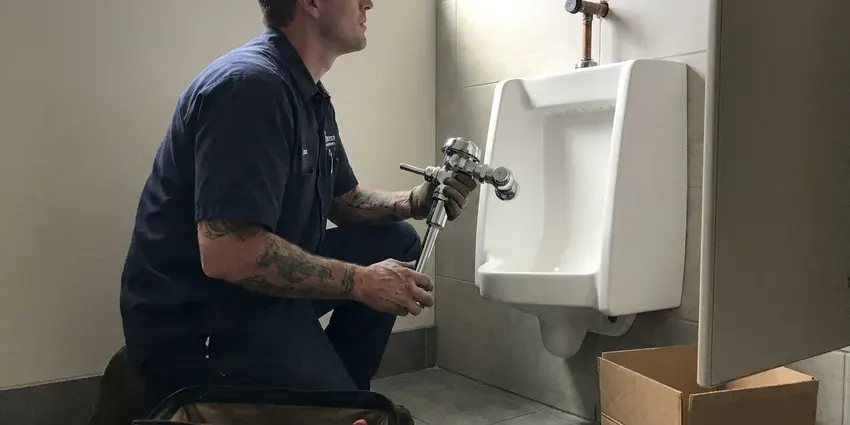

Sink Installation in Bowie, MD
We check the cutout, the faucet holes and the drain height before install day on sinks in Bowie, MD.
- Same-Week Installs
- Licensed & Insured
- New Stops on Request
- Leak Checked Before We Leave

Local Sink Installers in Bowie, MD
Send us the sink model and you will get a flat install price before you order.
Undermount, Vessel and Drop-In Sinks in Bowie, MD
Most sink installs in Bowie, MD happen during a remodel. We coordinate with your countertop fabricator and cabinet installer so the sink is set, clipped and sealed before the backsplash goes up. Remodel timing is half the job. One missed step can mean pulling a finished counter.
Our expertise includes:
- Mount faucets and pop-ups before the bowl is set
- Set undermount bowls with clips and a continuous silicone bead
- Install vessel sinks with the matching drain

Additional Bathroom Plumbing Services in Bowie, MD
From toilets to showers, our bathroom plumbing team in Bowie, MD handles repairs, installs, and upgrades with tidy, code-compliant work.


Customers
Why Choose BVL Plumbing for Sink Installation in Bowie, MD?
Clean installs matter in a finished kitchen. Counters and floors get covered, caulk lines get cut clean, and squeeze-out gets wiped before it skins. We haul the old sink away.
- Transparent Pricing, One written price for the whole install before any work starts.
- Proper Support, Undermount bowls get clips and adhesive, never glue alone.
- Quality Workmanship, Rims sealed all the way around and traps aligned without strain.
Citywide Coverage
Remodels across town keep our crews busy. We work alongside counter shops and cabinet installers on jobs all over the area, so we know their schedules and can usually fit the plumbing in right behind them. That saves you a week.
Experienced Team
Every install has a licensed plumber on it. A licensed plumber handles the drain, the stops and the final leak test on every job. We hold to that every time.
Safety-First Approach
Heavy sinks need proper support. A cast iron farmhouse bowl or a stone vessel can crack a cabinet or pull a bracket out of the wall if it is not supported, so we add blocking, rails or a carrier as the sink requires. We do not guess at load.
Trusted Certified Bowie Plumbing Services Professionals
At BVL Plumbing, we take pride in licensed, certified plumbing services throughout Bowie, MD. Credentials matter in this trade. Every repair, install and maintenance visit follows strict safety and quality rules, and the plumbers doing the work carry recognized industry credentials.
Call Us Now PHCC Plumbing Contractor Recognition
PHCC Plumbing Contractor Recognition Better Business Bureau (BBB) Accreditation
Better Business Bureau (BBB) Accreditation Angi Certified Pro
Angi Certified Pro ISO 9001 Quality Management Certification
ISO 9001 Quality Management CertificationHow We Set New Sinks in Bowie, MD
Pedestal Sink Installation in Bowie, MD
Pedestal sinks hide almost nothing. The supply stops and the trap sit right behind the column, so we center the drain stub, use chrome or polished brass trap parts, and set the stops tight to the wall where the pedestal can hide them. The wall needs solid blocking. The basin hangs from it, not the pedestal.

Leak-Proof Sink Connections in Bowie, MD
Every joint gets tested before we leave. The bowl gets filled and drained while we watch every nut under the sink with a light and a dry towel. Paper towels catch the smallest drip. Pipe dope goes on threads, not compression fittings.
Undermount Clips and Cure Time in Bowie
Undermount bowls need overnight to cure. Silicone holds in a few hours but needs about a day before it carries a full bowl. The bowl stays braced until our return. Plumbing goes in on the second visit.
Faucet and Drain Assembly for New Sinks in Bowie, MD
Faucet and drain go on before the sink is set, when possible. Setting the faucet and drain while the bowl is on sawhorses is faster and seals better than working in the cabinet. Undermounts are the exception. Those get plumbed from below.
Commercial Sink Installation in Bowie, MD
Commercial kitchens need sinks the health inspector will sign off on. A three-bay sink drains indirectly through an air gap to a floor sink, and hand sinks need tempered water near each prep area. We read the plan review first. Mop basins and grease interceptor ties are part of it.
Wall-Mount and ADA Sink Installation in Bowie, MD
Wall-hung lavatories need a carrier or heavy blocking. For an accessible bathroom we set the rim no higher than 34 inches, leave knee clearance underneath, and wrap or shield the hot water and drain pipes so a seated user cannot touch them. Offset drains help with knee space. Lever or sensor faucets finish it off.
Vessel Sink Installation in Bowie, MD
Vessel sinks sit on top of the counter. Since the rim sits higher, the faucet has to be taller or wall-mounted, and the drain must match whether the bowl has an overflow. Bowls without an overflow need an unslotted drain. Getting that wrong leaves water under the bowl.

Undermount Sink Installation in Bowie
Undermount sinks hang from the countertop. The bowl hangs on clips with a full bead of silicone, and it stays braced overnight while the adhesive cures. Adhesive by itself will not hold it. Plumbing goes on the next day.
Sink Installation Near Me in Bowie, MD
Searching sink installation near me in Bowie turns up a lot of handymen. A licensed plumber sets the sink, connects the drain to code and replaces the stops if they are worn, so the install passes inspection and the cabinet stays dry. That difference shows up later.
Housing age tells us a lot. Older rowhomes and early twentieth century houses across Maryland often still carry galvanized supply pipe and cast iron drains that are near the end of their life. That tells us where the drain stubs and stops are likely to be before we open the cabinet, so the install day has fewer surprises. Less guessing, quicker work.
BVL Plumbing at a Glance
- Fully licensed plumbing team covering Bowie, MD
- Same-day appointments and 24/7 emergency response
- Clear written estimates, no hidden fees
- 4.8-star rated by 542+ Maryland customers
Bowie Map
Bowie Information
- Population
- 57,254
- Area codes
- 301/240/410
- Service area
- Bowie and towns within a 40 mile drive
- Nearby
- Severn, Silver Spring, Glen Burnie, Columbia
A poorly set sink in Bowie, MD sends water into the cabinet and subfloor, often for months before anyone sees it. Older rowhomes and early twentieth century houses across Maryland often still carry galvanized supply pipe and cast iron drains that are near the end of their life.
Talk to a Plumber
Reach out to BVL Plumbing for honest, reliable plumbing from people who know the trade in Bowie, MD.
Our Specialized Plumbing Services in Bowie, MD
At BVL Plumbing, you get every kind of plumbing service from one company across Bowie, MD. We go from leak detection all the way to full system installations, for homes and commercial buildings, and we do it quickly at a fair price. Explore our core services below:


The Sink Installation Process in Bowie, MD
Here is how a sink install goes from the first call to the leak test.
Request a Quote
Call (443) 719-1650 and describe the sink you picked. You get a flat price.
Remove and Prep
We pull the old sink, protect the open lines and replace worn stops.
Install and Test
The new sink is set, sealed and plumbed, then tested with a full bowl.
Frequently Asked Questions About Sink Installation in Bowie
Plan on $200 to $600 in labor. The sink style drives most of the cost, then any drain moves or stop replacements. We give you a written quote.
Empty the cabinet under the sink. Clear the counter around it, move anything fragile off nearby shelves, and have the new sink and faucet unboxed so we can check for shipping damage before install day. Keep pets in another room.
Not always. If the old faucet still works and its hole pattern matches the new sink, it can go back on, but older faucets with worn cartridges are worth replacing while everything is apart. Changing it later means another visit.
Every common style. We install every mount type for kitchens and baths, plus utility and commercial sinks. Material does not limit us.
Laminate pairs best with drop-in sinks. Stone and solid surface take undermounts since the edge polishes, while butcher block usually gets a drop-in or apron sink. Ask before you order.
Sometimes, for function. A shallow bowl that splashes or a double bowl too narrow for a sheet pan can be fixed with a deeper single bowl in the same cutout, often without touching the counter. Style alone is a fair reason.
For a like-for-like swap, usually no. New locations or a second bowl usually count as new work that needs a permit. We will tell you which applies.
Our labor is warrantied in writing. If a joint we made leaks or a clip we set loosens during the warranty term, we come back and fix it at no charge, and the term is printed on your invoice. Manufacturers cover the sink and faucet.
Hear From Customers Who Hired Our Plumbing Experts

Carlos V.
Our house still had galvanized pipe, and upstairs the shower was a trickle. The crew repiped everything in PEX over three days and patched every drywall hole before they left. The pressure difference is night and day.
Repiping · Columbia, MD
Rachel N.
Hard water was leaving white crust on every faucet and our dishwasher was struggling. The tech tested the water, recommended a softener sized for a family of five, and installed it with a bypass valve in one afternoon. The spots on our glasses are gone.
Water Softener · Glen Burnie, MD
Monica A.
Our water bill nearly doubled in one month with no change in how we used water. The tech checked the meter, heard the leak under the hallway with his equipment, and opened a hole about a foot square. Fixed the same day.
Slab Leak Repair · Bethesda, MDMegan L.
Our upstairs tub drained so slowly that every shower turned into a bath. BVL Plumbing pulled a wad of hair out of the stopper and then snaked the line past the trap. Three months later it still drains fast.
Drain Cleaning · Severn, MD
Kevin O.
Before buying our house I paid for a sewer camera inspection. BVL Plumbing found a belly in the line that held standing water about forty feet from the cleanout. We used the video to get the sellers to fix it before closing.
Sewer Camera Inspection · Bowie, MD
Karen W.
After our third pinhole leak in copper, we stopped patching. BVL Plumbing gave us a written plan room by room and repiped the house in PEX while we stayed in it. The crew covered our floors every morning and cleaned up every night.
Repiping · Glen Burnie, MD